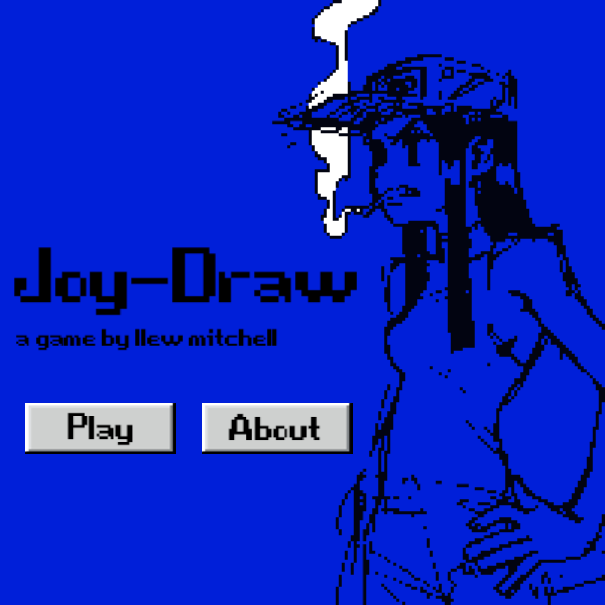

Joy-Draw.
Semester 1, 2025.
Do people even scribble and sketch anymore?
It seems like the days of doodling mindlessly on a post-it note while chatting on the phone are gone. Little spare zen moments of sneakily drawing on the desk or inside the door of the toilet stall have been replaced by being fully occupied by the mobile phone. Joy-Draw is a response to a brief from Foundations of Creative Code to build a drawing program using JavaScript.
Play Joy-Draw: https://editor.p5js.org/llewbrah/sketches/QHhQBx6Uq
